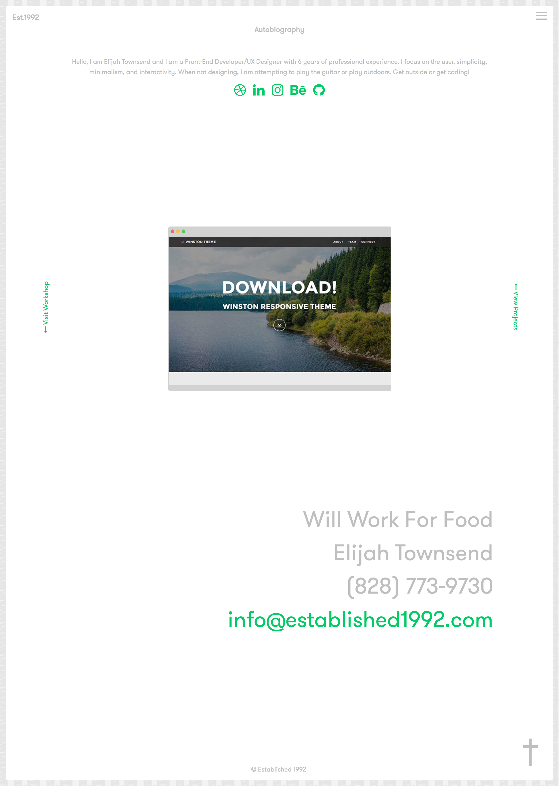
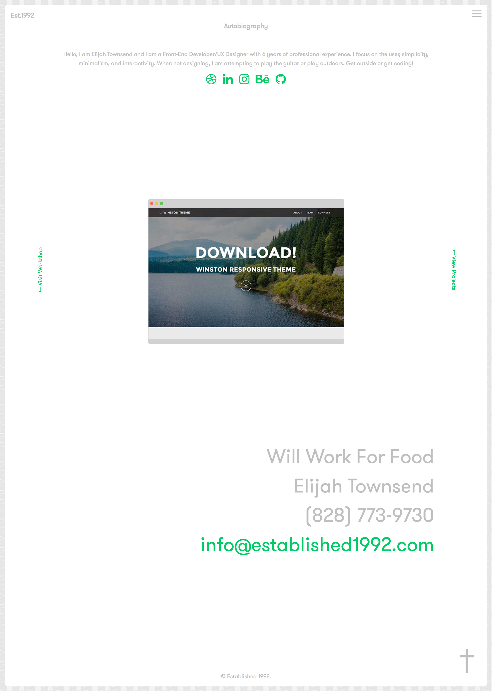

Established 1992
Project Description
I wanted to demonstrate my process through redesigning this site. In every project, pen and pad are my tool of choice to get a few ideas out of my head and onto the mockup. After mocking up a few designs, I would usually go to high-fidelity mockups, but for this project, I went straight to designing and developing. In this redesign, I wanted to focus on simplicity for the user and also minimalism. Let me know what you think!
Tools
Pencil & Pad, Sketch, Adobe Photoshop, HTML, CSS, JavaScript, jQuery
 
